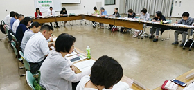

|
|
第54回埼玉県消費者大会実行委員会 5月22日（火）13時30分より、さいたま市与野本町コミュニティセンター多目的ルームにて、第54回埼玉県消費者大会第2回実行委員会が開催され、22人(14団体)と事務局3人が出席しました。 【議題】  1．岩岡事務局長から 2．第1回実行委員会報告 3．基調報告骨子（二次案）の検討 4．第54回埼玉県消費者大会スローガンを確認 「自ら考え行動する消費者になろう -誰ひとり取り残さない平和な社会を目指して- 」 5．全体会記念講演講師について 湯浅誠さんに決定しました。 6．大会当日の内容について
7．第2回プレ学習会について 6/16「地域で防ごう！消費者被害in埼玉」を第2回プレ学習会に位置づけて、参加を呼びかけました。 8．お知らせ 第1回県内消費者団体全体研修会、埼玉県☆農薬シンポジウムなどをご案内しました。 □次回日程 6月16日（土）10：30～ 浦和コミュニティセンター 第14会議室 |